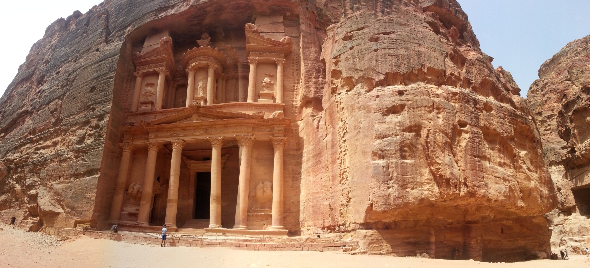

PETRA ANTİK KENTİ

Merhabalar bu yazımızda Petra Antik Kenti hakkında bilgi vereceğim
Tarihi
Petra,Arapça'da Batrā antik şehirdir.Helenistlik ve Roma zamanlarında bir Arap krallığının merkezidir ve kalıntıları güneybatı'da
Ürdün'dedir.
Şehir, bilinenlere göre İsrailli lider Musa'nın bir kayaya çarpıp suyun fışkırdığı yerlerden biri olan Wadi Mūsā
(Musa Vadisi) tarafından doğudan batıya delinmiş bir teras üzerine inşa edildi . Vadi, kırmızı ve morun soluk sarıya değişen tonları
ile damarlı kumtaşı kayalıklarla çevrilidir ve bu nedenle Petra, 19. yüzyıl İngiliz İncil bilgini John
William Burgon tarafından "Zamanın yarısı kadar eski bir gül kırmızısı şehir" olarak adlandırılmıştır. Modern Wadi Mūsā kasabası,
Antik kentin bitişiğinde , esas olarak orayı ziyaret etmeye devam eden turist akıntısına hizmet ediyor. Nabataeans
106 yılında Romalılar tarafından yenildikten sonra CE , Petra Roma eyaleti parçası oldu Arabistan ancak değişen ticaret yolları da
kademeli ticari gerilemeye neden dek gelişmeye devam etti. 551 yılında bir depremin (ilki değil) şehre zarar
vermesinden sonra, önemli yerleşim yerlerinin durduğu görülüyor. İslam istilası 7. yüzyılda meydana gelen ve bir Haçlı karakol 12.
yüzyılda orada faaliyet kanıtıdır. Sonra Haçlı İsviçreli gezgin tarafından yeniden keşfedilen kadar şehir
Batı dünyasına bilinmiyordu.
Kim Yaptı
Bölgedeki arkeolojik kazılar, bölgenin ilk olarak 9000 yıldan daha uzun bir süre önce yaşanıldığını göstermiştir. Bu gizemli yer, tarihi boyunca birçok farklı kabile tarafından işgal edildi. Geleneksel hikayelere dayanarak, bölgeyi işgal
eden ilk bilinen kabile , hakkında çok az şey bilinen Edomites'di . Daha sonra MÖ 300 civarında, Nabatalar (Nabatanlar) adlı çok tanrılı bir Arap kabile bölgeye göç etti. Kısa süre sonra Petra gelişti ve Nabataean krallığının başkenti
oldu. Başkaları kendilerinden önce bölgede bulunmuş olsa da, Nabatalılar Petra'nın gerçek inşaatçıları olarak kabul edilir . O kadar ünlü bir kabileydi ki, o zamanlar birçok farklı medeniyet tarafından bahsedildi ve bunlara atıflar içeren
kayıtlar eski Yunanistan, Çin ve Roma İmparatorluğu'nda bulundu. Bununla birlikte, Nebatiler ve toplumları hakkında çok az şey biliniyor ve bildiğimiz şeylerin çoğu arkeolojik çalışmalardan ve görünüşe göre "hem evsel amaçlarla hem de
bahçeleri sulamak için bol miktarda su kaynağından" etkilenen bilim adamı Strabon'dan geliyor. MS 1. yüzyılda siteyi ne zaman ziyaret ettiğini gördü.
Efsaneler
Petra, Indiana Jones'un Indiana Jones ve Son Haçlı Seferi filminde Kutsal Kase için avladığı şehirdir . Petra ile ilgili efsanelerden biri Haçlılar'dan kaynaklanmaktadır ve Musa'nın Mısır'dan kaçarken İsrailoğullarına su getirmek için bir
kayaya çarptığı bu bölgede bir yerde olduğunu belirtir. Tapınak Şövalyeleri , Ürdün'deki Petra antik kentinde konuşlandıklarında Ahit Sandığı'nı bulduklarını da iddia ettiler . Petra ile ilgili bir başka efsane, Hazine olarak bilinen binada
dikkate değer hazinelerin saklı olduğu inancıyla ilgilidir. Birçok hazine avcısı, yaraları hala görülebilen bu sözde serveti aramak için cepheye ateş etti.